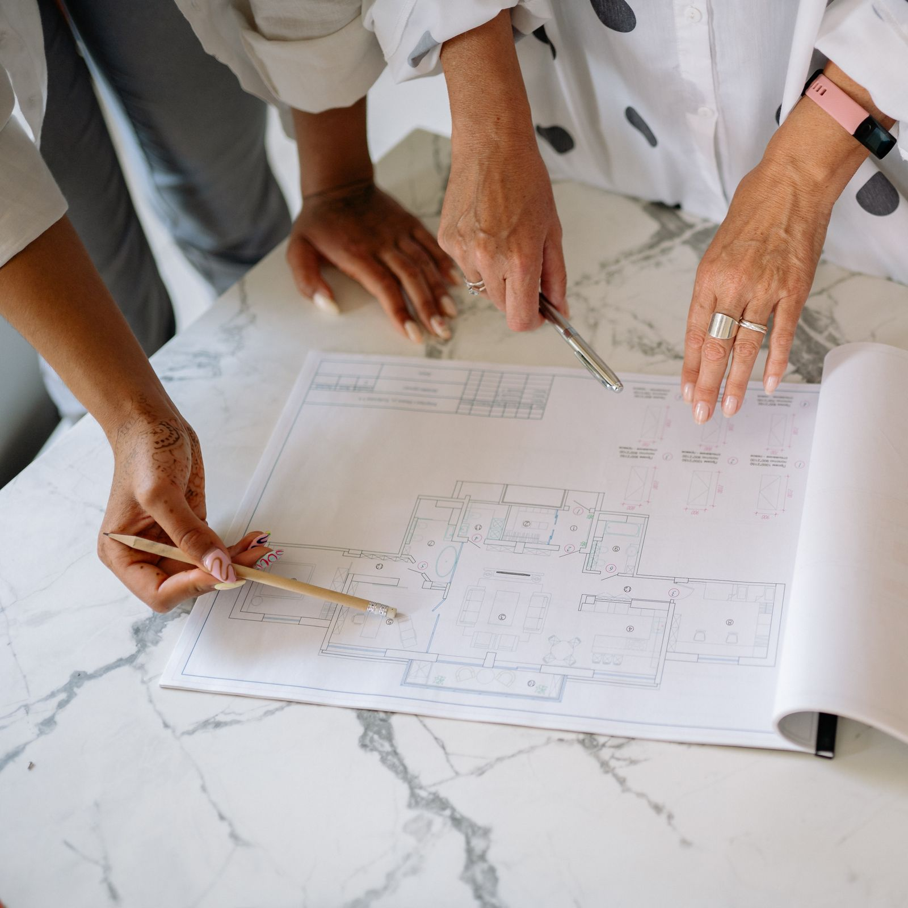
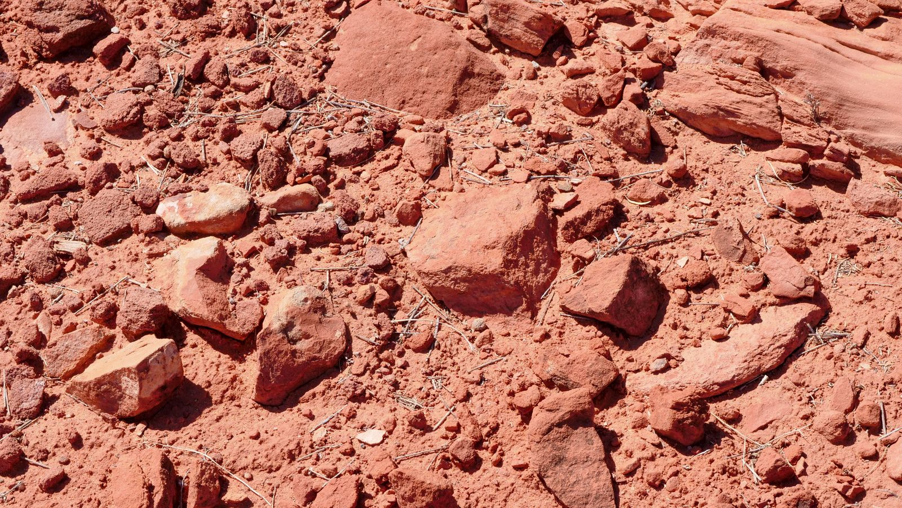

About · The designer & the numbers
An architect who reads dose reports.
Solberg Habitats is a one-person studio. That is a limitation and the whole offer: the person who draws your habitat section is the person who has read the radiation literature, slept in an analogue station, and will sign the study.
Maren Solberg
I trained as an architect in Trondheim and spent six years on ordinary buildings — schools, mostly, in northern Norway, where the design enemy is also the environment: darkness, cold, and the long psychological winter. A school in Tromsø and a Mars habitat turn out to share a brief: keep people well in a place that is working against them, for a long time, with no option to leave.
A master's in space studies followed, then the work that actually qualifies me: three analogue campaigns — two in Utah's Mars-analogue desert, one in a sub-Arctic station — first as a crew member, then as the person sent to fix the interiors crews kept complaining about. Fourteen studies since 2019: agency concept work, commercial lander programmes, two film productions, and one private dome I declined.
What I am not: not an engineer of record, not a life-support manufacturer, not a rocket company. A study from this studio is a concept document that your engineers can build a requirements set from — it is not a licence to weld. Where a question belongs to a structural engineer or an ECLSS specialist, the study says whose desk it belongs on.
The studio's rule, printed on every document it issues: concept work is labelled concept work. If a drawing from this office ever shows hardware that exists, the caption will say where it is standing.


The constraints register
The numbers every study from this office stands on, with their published bases. If a figure here is ever revised, the register's revision letter changes and every live study is re-checked against it.
| Constraint | Value used | What it does to the design | Basis |
|---|---|---|---|
| Radiation (GCR) | ≈ 0.67 mSv / day at the surface, unshielded | 2.5 m regolith berm over the hull; berths inside the water-wrapped shelter core; design target < 50 mSv/yr at the berth | MSL RAD surface measurements (Hassler et al., Science 2014); standard regolith shielding studies |
| Pressure differential | 101 kPa inside · ≈ 0.6 kPa outside | The hull is a pressure vessel first and a building second; penetrations minimised; windows are two 400 mm ports, not a wall of glass | Mars mean surface pressure ≈ 600 Pa (lander meteorology, Viking–Perseverance) |
| Dust | Perchlorate-bearing, electrostatic, abrasive | Suitports preferred; cycling lock with brush-down; no horizontal external surfaces; seals and connectors specified as consumables | Phoenix & Curiosity soil chemistry (perchlorates ≈ 0.5 wt%); analogue field experience |
| Water | 24 L / crew / sol budget · ≥ 95% recovery | Hygiene is the swing load and is budgeted honestly, not wished down; the water store doubles as shelter shielding | ISS water recovery demonstrated up to ≈ 98% (NASA ECLSS reporting); studies close at 95% with margin |
| Power | 590 W/m² solar at top of atmosphere — before dust | Life support never rides on solar alone; 2 × 10 kWe fission as the reference backbone (N+1), arrays sized with a −40% dust derate | Mars solar constant; Kilopower/KRUSTY programme (NASA, 2018); dust-storm opacity records (2018 global storm) |
| Temperature | Mean −63 °C · nights to ≈ −110 °C at study sites | Thermal design argued from freeze–thaw cycle counts on seals and connectors, not from a single minimum temperature | Lander meteorology records (Viking, Phoenix, InSight, Perseverance MEDA) |
| Communications delay | 3–22 minutes, one way | The crew is its own rescue service: procedures, spares and medical volume are designed for autonomy, and the layout assumes no real-time help | Earth–Mars light time over the synodic cycle — orbital geometry, not opinion |
What this studio doesn't do
- No unshielded-glass concepts. If the brief's hero image requires the crew to sleep under bare glazing, the answer is a feasibility note explaining the dose, not a drawing.
- No render-only commissions. Pictures without budgets attached mislead clients and juries; every visual leaves with its mass and dose figures beside it.
- No borrowed credibility. Agency and programme names appear in the register by type, not by logo; nothing here implies an endorsement that doesn't exist.
- No silent risks. If a budget doesn't close — mass, power, water — the study says so on the page where it happens, as the Precursor pack does.
Commissioning, in order
- Send the brief as it is — crew size, duration, site if known, and the constraint you're most worried about. Renders of what you hope it looks like are optional and slightly discouraged.
- Expect a feasibility note first (£6,500, three weeks). It returns a constraints register for your mission and a go / no-go with reasons — including, sometimes, no-go.
- Agree the deliverable depth. Drawings and budgets, or drawings, budgets and an analogue review. The price difference is stated before work starts, not discovered after.
- One review round is an argument, scheduled. Your engineers get the draft with the working shown; objections are answered in the revision log, in writing.
- The issued study is Rev-controlled. When the register's numbers move, you'll hear about it — studies are re-checked against register revisions for two years.
Start with the constraints, not the picture.
FEASIBILITY NOTE · £6,500 · THREE WEEKS · GO / NO-GO WITH REASONS